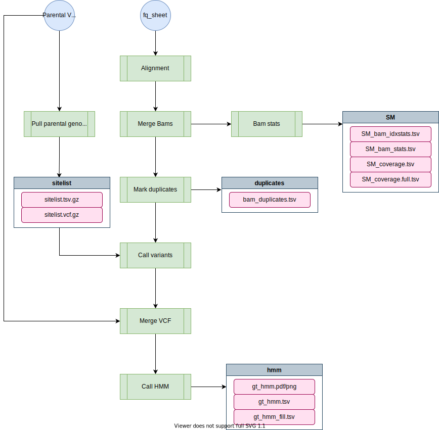

nil-ril-nf¶
The nil-ril-nf pipeline will align, call variants, and generate datasets for NIL and RIL sequence data. It runs a hidden-markov-model to fill in missing genotypes from low-coverage sequence data.
Overview¶
███╗ ██╗██╗██╗ ██████╗ ██╗██╗ ███╗ ██╗███████╗
████╗ ██║██║██║ ██╔══██╗██║██║ ████╗ ██║██╔════╝
██╔██╗ ██║██║██║█████╗██████╔╝██║██║█████╗██╔██╗ ██║█████╗
██║╚██╗██║██║██║╚════╝██╔══██╗██║██║╚════╝██║╚██╗██║██╔══╝
██║ ╚████║██║███████╗ ██║ ██║██║███████╗ ██║ ╚████║██║
╚═╝ ╚═══╝╚═╝╚══════╝ ╚═╝ ╚═╝╚═╝╚══════╝ ╚═╝ ╚═══╝╚═╝
parameters description Set/Default
========== =========== =======
--debug Set to 'true' to test false
--cores Number of cores 4
--A Parent A N2
--B Parent B CB4856
--cA Parent A color (for plots) #0080FF
--cB Parent B color (for plots) #FF8000
--out Directory to output results NIL-N2-CB4856-2017-09-27
--fqs fastq file (see help) (required)
--relative use relative fastq prefix true
--reference Reference Genome (required)
--vcf VCF to fetch parents from (required)
--tmpdir A temporary directory tmp/
The Set/Default column shows what the value is currently set to
or would be set to if it is not specified (its default).

Alignment- Performed using bwa-memMerge Bams- Combines bam files aligned individually for each fastq-pair. Sambamba is actually used in place of samtools, but it's a drop-in, faster replacement.Bam Stats- A variety of metrics are calculated for bams and combined into individual files for downstream analsyis.Mark Duplicates- Duplicate reads are marked using Picard.Call Variants individual- Variants are called for each strain inidividually first. This generates a sitelist which is used to identify all variant sites in the population.Pull parental genotypes- Pulls out parental genotypes from the given VCF. The list of genotypes is filtered for discordant calls (i.e. different genotypes). This is VCF is used to generate a sitelist for calling low-coverage bams and later is merged into the resulting VCF.Call variants union- Uses the sitelist from the previous step to call variants on low-coverage sequence data. The resulting VCF will have a lot of missing calls.Merge VCF- Merges in the parental VCF (which has been filtered only for variants with discordant calls).Call HMM- VCF-kit is run in various ways to infer the appropriate genotypes from the low-coverage sequence data.
Important
Do not perform any pre-processing on NIL data. NIL-data is low-coverage by design and you want to retain as much sequence data (however poor) as possible.
Software Requirements¶
- The latest update requires Nextflow version 23+. On Rockfish, you can access this version by loading the
nf23_envconda environment prior to running the pipeline command:
module load python/anaconda
source activate /data/eande106/software/conda_envs/nf23_env
Relevant Docker Images¶
The docker image used by the nil-ril-nf pipeline is the nil-ril-nf docker image:
The Dockerfile is stored in the root of the nil-ril-nf github repo and is automatically built on Dockerhub whenever the repo is pushed.
Usage¶
Note: if you are having issues running Nextflow or need reminders, check out the Nextflow page.
Testing on Rockfish¶
This command uses a test dataset
nextflow run -latest andersenlab/nil-ril-nf --debug
Running on Rockfish¶
You should run this in a screen or tmux session.
nextflow run -latest andersenlab/nil-ril-nf -resume
Running the pipeline locally¶
When running locally, the pipeline will run using the several different docker images. You must have docker installed. You will need to obtain a reference genome to run the alignment with as well. You can use the following command to obtain the reference:
curl ftp://wormbase.org/pub/wormbase/releases/WS276/species/c_elegans/PRJNA13758/c_elegans.PRJNA13758.WS276.genomc.fa.gz > c_elegans.PRJNA13758.WS276.fa.gz
You will also need to build a bwa mem index or copy it from Rockfish:
for I in rpac amb ann pac bwt rbwt rsa sa; do
scp <JHED_ID>@login.rockfish.jhu.edu:/vast/eande106/data/c_elegans/genomes/PRJNA13758/WS276/c_elegans.PRJNA13758.WS276.genomc.fa.gz.${I} ./
done
Run the pipeline locally with:
nextflow run -latest andersenlab/nil-ril-nf -profile local -resume
Parameters¶
-profile¶
There are three configuration profiles for this pipeline.
rockfish- Used for running on Rockfish (default).quest- Used for running on Quest.local- Used for local development.
Note
If you forget to add a -profile, the rockfish profile will be chosen as default
--debug¶
You should use --debug for testing/debugging purposes. This will run the debug test set (located in the test_data folder).
For example:
nextflow run -latest andersenlab/nil-ril-nf --debug
--fqs¶
In order to process NIL/RIL data, you need to move the sequence data to a folder and create a fq_sheet.tsv. This file defines the fastqs that should be processed. The fastq can be specified as relative or absolute. By default, they are expected to be relative to the execution directory. The FASTQ sheet details strain names, ids, library, and files. It should be tab-delimited and look like this (this shows relative paths to fastqs):
NIL_01 NIL_01_ID S16 <relative_path_to_fq>/NIL_01_1.fq.gz <relative_path_to_fq>/NIL_01_2.fq.gz
NIL_02 NIL_02_ID S1 <relative_path_to_fq>/NIL_02_1.fq.gz <relative_path_to_fq>/NIL_02_2.fq.gz
Notice that the file does not include a header. The table with corresponding columns looks like this (this shows absolute paths to fastqs).
| strain | fastq_pair_id | library | fastq-1-path | fastq-2-path |
|---|---|---|---|---|
| NIL_01 | NIL_01_ID | S16 | / |
/ |
| NIL_02 | NIL_02_ID | S1 | / |
/ |
The columns are detailed below:
- strain - The name of the strain. If a strain was sequenced multiple times this file is used to identify that fact and merge those fastq-pairs together following alignment.
- fastq_pair_id - This must be unique identifier for all individual FASTQ pairs.
- library - A string identifying the DNA library. If you sequenced a strain from different library preps it can be beneficial when calling variants. The string can be arbitrary (e.g. LIB1) as well if only one library prep was used.
- fastq-1-path - The relative or absolute path of the first fastq.
- fastq-2-path - The relative or absolute path of the second fastq.
This file needs to be placed along with the sequence data into a folder. The tree will look like this:
NIL_SEQ_DATA/
├── NIL_01_1.fq.gz
├── NIL_01_2.fq.gz
├── NIL_02_1.fq.gz
├── NIL_02_2.fq.gz
└── fq_sheet.tsv
Set --fqs as --fqs=/the/path/to/fq_sheet.tsv.
Important
Do not include the parental strains in the fq_sheet. If you re-sequenced the parent strains and want to include them in the analysis as a control, you need to rename the parent strains to avoid an error in merging the VCFs (i.e. N2 becomes N2-1).
--vcf¶
Before you begin, you will need access to a VCF with high-coverage data from the parental strains. In general, this can be obtained using the latest release of the wild-isolate data which is usually located in the /vast/eande106/data analysis folder (on Rockfish). For example, the most recent C. elegans VCF could be found here:
/vast/eande106/data/c_elegans/WI/variation/20210121/vcf/WI.20210121.hard-filter.isotype.vcf.gz
This is the hard-filtered VCF, meaning that poor quality variants have been stripped. Use hard-filtered VCFs for this pipeline.
Set the parental VCF as --vcf=/the/path/to/WI.20210121.hard-filter.isotype.vcf.gz
--reference¶
A fasta reference indexed with BWA. For example, the C. elegans reference could be found here:
/vast/eande106/data/c_elegans/genomes/PRJNA13758/WS276/c_elegans.PRJNA13758.WS276.genome.fa.gz
--A, --B (optional)¶
Two parental strains must be provided. By default these are N2 and CB4856. The parental strains provided must be present in the VCF provided. Their genotypes are pulled from that VCF and used to generate the HMM. See below for more details.
--cores (optional)¶
The number of cores to use during alignments and variant calling. Default is 4.
--cA, --cB (optional)¶
The color to use for parental strain A and B on plots. Default is orange and blue.
--out (optional)¶
A directory in which to output results. By default it will be NIL-A-B-YYYY-MM-DD where A and be are the parental strains.
--relative (optional)¶
If you want to specify fastqs using an absolute path use --relative=false. Set to true by default.
--cross_obj (optional)¶
If you are running a set of RILs, you might want to add the --cross_obj true parameter. When true, the pipeline will run an additional step to pair down the total genetic variants to only the informative variants and output a smaller genotype matrix to input directly into a new cross object. An example of how to generate a cross object can be found in the bin. There is no need to run this option for NIL data.
--tmpdir (optional)¶
A directory for storing temporary data.
Output¶
The final output directory looks like this:
.
├── log.txt
├── fq
│ ├── fq_bam_idxstats.tsv
│ ├── fq_bam_stats.tsv
│ ├── fq_coverage.full.tsv
│ └── fq_coverage.tsv
├── SM
│ ├── SM_bam_idxstats.tsv
│ ├── SM_bam_stats.tsv
│ ├── SM_coverage.full.tsv
│ ├── SM_union_vcfs.txt
│ └── SM_coverage.tsv
├── hmm
│ ├── gt_hmm.(png/svg)
│ ├── gt_hmm.tsv
│ ├── gt_hmm_fill.tsv
│ ├── NIL.filtered.stats.txt
│ ├── NIL.filtered.vcf.gz
│ ├── NIL.filtered.vcf.gz.csi
│ ├── NIL.hmm.vcf.gz
│ ├── NIL.hmm.vcf.gz.csi
│ └── gt_hmm_genotypes.tsv
├── bam
│ └── <BAMS + indices>
├── duplicates
│ └── bam_duplicates.tsv
└─ sitelist
├── N2.CB4856.sitelist.[tsv/vcf].gz
└── N2.CB4856.sitelist.[tsv/vcf].gz.[tbi/csi]
log.txt¶
A summary of the nextflow run.
duplicates/¶
bam_duplicates.tsv - A summary of duplicate reads from aligned bams.
fq/¶
- fq_bam_idxstats.tsv - A summary of mapped and unmapped reads by fastq pair.
- fq_bam_stats.tsv - BAM summary by fastq pair.
- fq_coverage.full.tsv - Coverage summary by chromosome
- fq_coverage.tsv - Simple coverage file by fastq
SM/¶
If you have multiple fastq pairs per sample, their alignments will be combined into a strain or sample-level BAM and the results will be output to this directory.
- SM_bam_idxstats.tsv - A summary of mapped and unmapped reads by sample.
- SM_bam_stats.tsv - BAM summary at the sample level
- SM_coverage.full.tsv - Coverage at the sample level
- SM_coverage.tsv - Simple coverage at the sample level.
- SM_union_vcfs.txt - A list of VCFs that were merged to generate RIL.filter.vcf.gz
hmm/¶
Important
gt_hmm_fill.tsv is for visualization purposes only. To determine breakpoints you should use gt_hmm.tsv.

The --infill and --endfill options are applied to the gt_hmm_fill.tsv file. You need to be cautious when examining this data as it is generated primarily for visualization purposes.
- gt_hmm.(png/svg) - Haplotype plot using
--infilland--endfill. - gt_hmm_fill.tsv - Same as above, but using
--infilland--endfillwith VCF-Kit. For more information, see VCF-Kit Documentation. This file is used to generate the plots. - gt_hmm.tsv - Haplotypes defined by region with associated information. Does not use
--infilland--endfill - gt_hmm_genotypes.tsv - Long form genotypes file.
- NIL/RIL.filtered.vcf.gz - A VCF genotypes including the NILs and parental genotypes.
- NIL/RIL.filtered.stats.txt - Summary of filtered genotypes. Generated by
bcftools stats NIL.filtered.vcf.gz - NIL/RIL.hmm.vcf.gz - The NIL/RIL VCF as output by VCF-Kit; HMM applied to determine genotypes.
plots/¶
- coverage_comparison.png - Compares FASTQ and Sample-level coverage. Note that coverage is not simply cumulative. Only uniquely mapped reads count towards coverage, so it is possible that the sample-level coverage will not equal to the cumulative sum of the coverages of individual FASTQ pairs.
- duplicates.(png/pdf) - Coverage vs. percent duplicated.
- unmapped_reads.png - Coverage vs. unmapped read percent.
sitelist/¶
<A>.<B>.sitelist.tsv.gz[+.tbi]- A tabix-indexed list of sites found to be different between both parental strains.<A>.<B>.sitelist.vcf.gz[+.tbi]- A vcf of sites found to be different between both parental strains.
Organizing final data¶
After the run is complete and you are satisfied with the results, follow these steps to ensure correct data storage on QUEST:
- Move the raw fastq files to
/vast/eande106/data/{species}/{NIL or RIL}/fastq/. You might want to usemv -ito ensure no files are overwritten. - Move the BAM files from the output folder to
/vast/eande106/data/{species}/{NIL or RIL}/alignments/. You might want to usemv -ito ensure no files are overwritten. - Delete the now empty
bamfolder in the output directory. - Move the sample sheet generated for analysis into the output directory.
- Make sure the output directory follows the default naming structure that is informative about the analysis (i.e.
NIL-20200322-N2-CB4856(if NIL/RIL analysis is performed for another lab, consider adding a-{LabName}like-Baughto the end of the folder name)). - Move the entire output folder to
/vast/eande106/data/{species}/{NIL or RIL}/variation.
Adding NIL sequence data to lab website¶
If your sequencing was N2-CB4856 NILs (and maybe other C. elegans NILs as well...?) you probably want to add this sequencing data to the lab website to be accessed by everyone when looking for NIL genotypes.
Check out this page for instructions on how to do that. Once done, you should be able to view your NILs on the NIL browser shiny app.